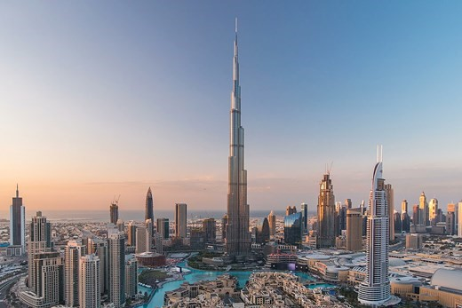

Quinto lugar
LOTTE WORLD TOWER, SEOUL, COREA DEL SUR
La torre “Lotte World” es el edificio más alto de Corea y la coronada joya de la arquitectura del país. El diseño consta de 123 pisos formados gracias a materiales tradicionales coreanos como cerámicas o caligrafía. El rascacielos se eleva en un pulcro perfil cónico que contrasta con la topografía montañosa de la ciudad. Por dentro, la torre contiene una amplia variedad de tipos de programas, incluyendo espacios de compra, pisos de oficina, un hotel de 5 estrellas de lujo y un “officetel” (oficina en la que las personas que trabajan el edificio residen) los cuales son comunes en el país. Además de presentar decoraciones típicas de un hotel como los muebles estándar, servicios de atención al cliente y acceso al gimnasio.
Otras características incluyen un centro comercial “Avenuel”, el mejor acuario urbano de Corea, una espectacular sala de música y el multiplex más grande de Asia (una famosa compañía de construcción a nivel global.). Este edificio se convirtió en el primero de 100 pisos en Corea. El vidrio utilizado sirve de recordatorio de la historia de las cerámicas coreanas.
Cuarto lugar
PING AN CENTRO FINANCIERO, SHENZHEN, CHINA
Este rascacielos es el físico e icónico centro del creciente distrito de negocios de Shenzhen.
Las cuatro fachadas de piedra y vidrio son enfundadas en piedras verticales con forma de cheurón (parte de la cola de los reptiles) que se extienden desde la basa del edificio. Los últimos 5 pisos incluyen tiendas que se alejan de la terraza del edificio para llegar a un sitio como un anfiteatro.
Este edifico super alto está también definido por un atrio central que sirve como un vestíbulo público que a su vez permite entrar a la luz del día, creando un espacio acogedor para reuniones, compras o cenas.
El plan original era añadir una antena de 60 metros en la azotea para sobrepasar a la torre Shanghai y así convertirse en el edificio más alto de China. Sin embargo, el plan se detuvo debido a la posibilidad de que pudiera detener u obstruir las vías aéreas. Más está conectado al centro de la ciudad. Diseñado por la agencia americana Kohn Pedersen Fox y asociados quienes ofrecen un acercamiento moderno a los rascacielos de China
Tercer lugar
MAKKAH ROYAL CLOCK TOWER, MECCA, SAUDI ARABIA
El “Big Ben” hecho aún más grande, el Makkah Royal Clock Tower Hotel fue construida en el ajetreado centro de La Meca, junto a la Gran Mezquita, la torre ofrece un lugar para los musulmanes devotos que hacen el viaje al Hajj.
«Fiel a su nombre, cuatro caras de reloj colosales están montadas cerca de la parte superior de la torre. Estos relojes tienen el récord de los más grandes y más altos del mundo», según Skyscrapercenter.com. También cabe destacar que podemos observar la forma en que los edificios a su alrededor tienen un efecto estabilizador.
El Abraj Al-Bait es un complejo de 7 rascacielos perteneciente al gobierno y localizado junto a la mezquita más grande del mundo y el lugar más sagrado para el islam, La Gran Mezquita de la Meca. Su torre central es la Makka Royal Clock, la cual contiene dos grandes espacios para rezar (para mujeres y hombres). Este proyecto estuvo a cargo del grupo Saudí Binladin, es el edificio más caro del planeta, con un costo de $15 billones de dólares.
Segundo lugar
SHANGHAI TOWER, CHINA
La torre de Shanghái es la más alta del tipo de tres super altos rascacielos adyacentes en el centro financiero de la ciudad, los otros dos son la torre Jin Mao Tower y el Centro del Mundo Financiero de Shanghái. Esta torre se eleva por sobre la línea del cielo, su curvada fachada y forma de espiral simbolizan la energía dinámica de la China moderna.
Su construcción, diseñada para alta eficiencia, provee 9 zonas verticales dividas en oficinas, ocio y tiendas. La torre es el edificio más sustentable y avanzado del planeta: una cobertura transparente se cierne por todo el edificio, creando un amortiguador entre el interior y exterior que caliente el frio aire para el invierno y disipa el calor del interior en el verano.
Primer lugar
BURJ KHALIFA, DUBAI, UAE
Combinando influencias islámicas con características modernas que ahorran energía, el Burj Khalifa «redefinió lo que es posible en el diseño e ingeniería de edificios de supertalla», según Skyscraper.com. También se conecta al sistema de transporte público de Dubái, lo que lo hace hermoso y práctico.
Inaugurado en 2012, su altura excluye a su antena, su nombre era originalmente Burj Dubái pero fue renombrado en honor al mandador de Abu Dhabi después de que le prestó dinero a los desarrolladores de Dubái, quienes se toparon con dificultades financieras durante la construcción.
El diseño está inspirado en diseños geométricos de una flor de desierto regional y el sistema de patrones encarna a la arquitectura islámica.
Mientras la torre se eleva desde una base trilateral en forma de y, nos topamos con un patrón espiral que reduce la masa del edificio al acercarse al final. Contiene oficinas, centros de compras y el hotel Armani. Este diseño de base trilateral está acompañado de formas proyectadas hacia los bordes para cortar a través del viento y así obtener una mejor estabilidad, haciendo posible de esta manera que sobrepase por más de 700 pies a su competidor más cercano.